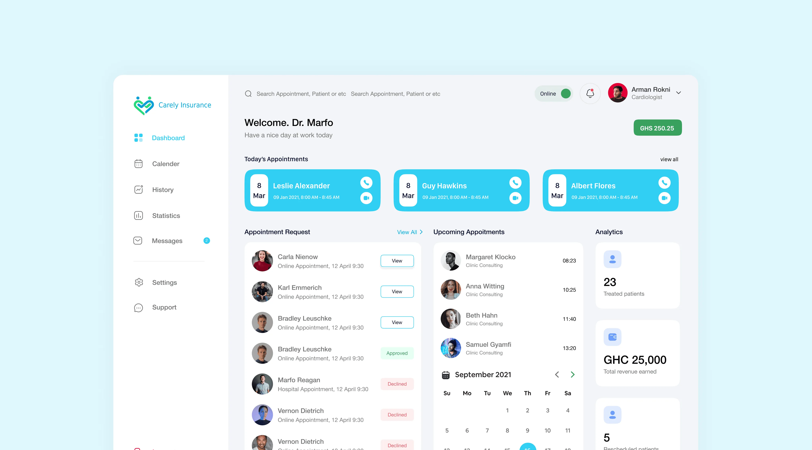
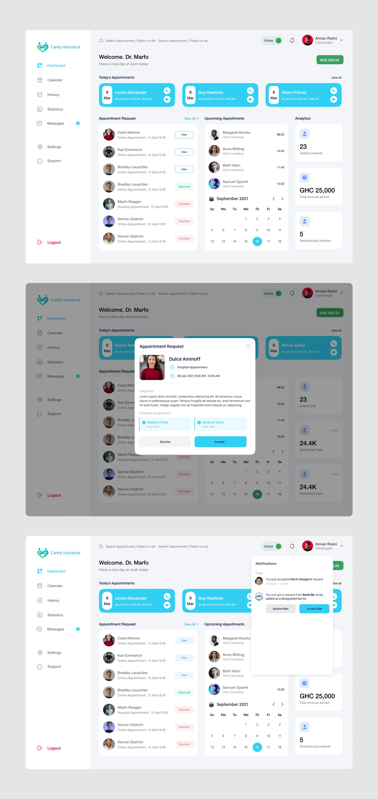
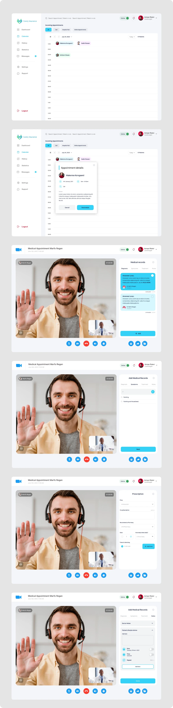
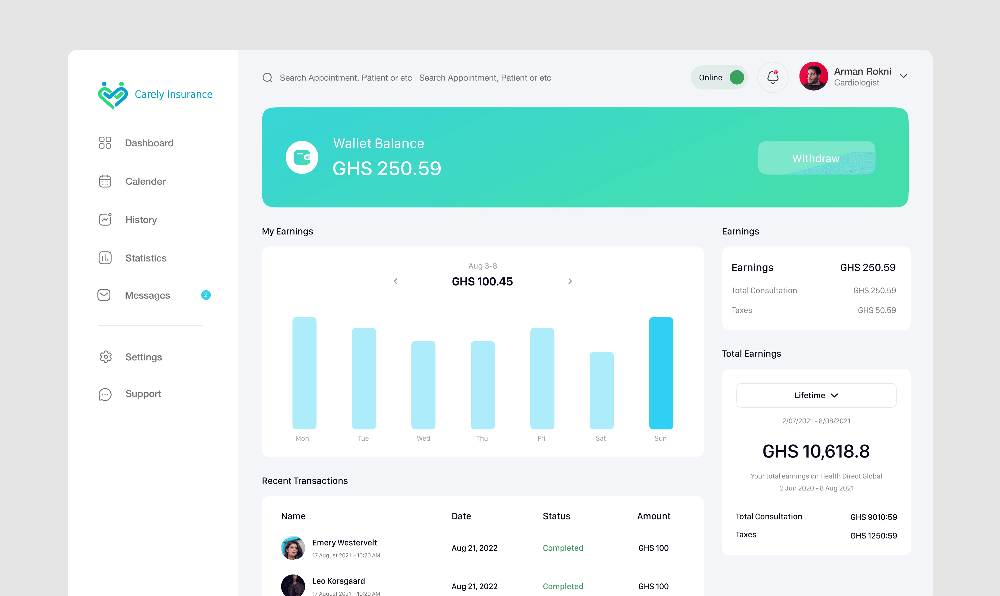

Carely is a health tech platform that connects patients with licensed doctors for online and in-person consultations. This project covers the design of the doctor-facing side of the platform — a dedicated portal where doctors manage their appointments, conduct consultations, issue prescriptions, communicate with patients, and track their earnings, all within a single product experience.
Case Study
Healthcare appointment booking platform

Overview
Key Problem Solved
Doctors were managing their practice across too many disconnected tools
Scheduling happened in one place, patient records in another, prescriptions were written separately, and earnings tracked elsewhere entirely. The result was a fragmented workflow that pulled doctors' attention away from what mattered most — the patient in front of them.
The design challenge was to bring every touchpoint of a doctor's working day into a single, coherent platform: from reviewing tomorrow's appointments to issuing a prescription mid-call and withdrawing earnings at the end of the week, without the friction of switching between tools.
What I Designed
The Doctor Dashboard
The dashboard serves as the primary command centre for doctors once they log in. It surfaces today's appointments at the top — each showing the patient name, appointment time, and quick-access call buttons — alongside an appointment request queue where doctors can approve or decline incoming bookings. Upcoming appointments and a live calendar widget sit alongside a snapshot of key stats: total patients treated, revenue earned, and rescheduled appointments. The goal was to give doctors a complete picture of their day without requiring them to navigate away from the home screen.
The left navigation extends the dashboard into five dedicated areas. The Calendar gives doctors a full chronological view of all appointments, filterable by type — call, hospital visit, or online — with the ability to tap into any slot and view appointment details, patient notes, and reschedule or cancel directly. History surfaces a record of past patients and consultations. Statistics tracks engagement and performance over time. Messages enables direct communication with patients within the platform. Settings covers profile management, security, notification preferences, ratings and reviews, and general account configuration. A Support tab gives doctors a direct line to the platform team when needed.

The Appointment and Consultation Flow
When an appointment goes live, doctors enter a consultation view that supports both video and voice call modes depending on the nature of the booking. The call interface keeps the patient feed front and centre while giving the doctor access to a structured set of clinical tools on the right-hand panel.
During the consultation, doctors can review the patient's past diagnosis history, add new diagnosis notes, log symptoms, and document treatment decisions — all within the same view, without switching context. This keeps the clinical record growing in real time rather than being filled in after the fact.

Earnings and Withdrawals
Doctors have access to a dedicated earnings view that shows their wallet balance, a weekly breakdown of earnings visualised as a bar chart, and a recent transactions table with patient name, date, status, and amount. A lifetime earnings summary on the right-hand side breaks down total consultation fees against taxes deducted. Doctors can withdraw their available balance directly from this screen.

Impact
Doctors gained a single platform to manage every part of their working day — from approving appointment requests and conducting video consultations to issuing prescriptions and tracking earnings — eliminating the need to context-switch between separate tools.
With clinical notes, symptoms, diagnosis history, and prescriptions all accessible within the live consultation view, doctors could focus entirely on the patient rather than the process. Clinical records grew in real time during the consultation, not reconstructed after the fact.
Reflection
Takeaways
Designing for a professional user like a doctor meant respecting the weight of the decisions being made within the product — a prescription issued, a diagnosis logged, a patient declined. Every interaction needed to feel considered and reliable, not just clean. If I were to extend this work, I would focus on the patient-facing side of the experience and design the full end-to-end journey from booking to post-consultation follow-up.